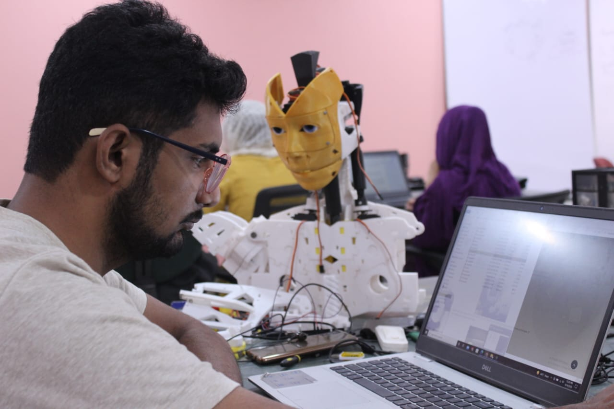

Why this project mattered
The Jazari concept was more than a mechanical build — it was an exploration of how a robotic system can communicate intent through motion, material choices, and coordinated behavior. It sits at the intersection of machine design, control thinking, and the broader question of how robotics can become expressive instead of purely functional.
The name nods to the tradition of automaton builders who treated mechanism and character as inseparable: a machine that moves well tells a story before it does anything useful. That framing shaped how the project was approached from the outset — rather than starting from a list of tasks the robot needed to perform, the early direction started from the question of what kind of presence the robot should have, and worked backward into the mechanics, joints, and control logic needed to support it.

02Form and behavior, together
The real challenge was balancing physical form with workable behavior. A robot that looks compelling but fails to move with purpose is not enough. Likewise, a robot that functions mechanically but does not embody a coherent design language can feel disconnected from the user.
The work required thinking through structure, movement, and system logic together to create a believable and intentional design narrative — treating none of those three as something that could be bolted on after the others were settled.
03From concept to prototype
The project evolved through iterative design work, beginning with conceptual sketches and mechanical layouts, then moving toward motion planning and control logic. Each iteration sharpened the robot's character: how it moved, how it stood, and how it expressed robotic intent.
This process was valuable not only for the prototype itself, but for developing a stronger understanding of embodied design and how form influences behavior — a feedback loop where a change to the physical structure would immediately change what the control logic needed to account for, and vice versa.

04Two systems, one character
Mechanical system
Structural geometry, actuator placement, and articulation were shaped to create stable motion and a recognizable robotic identity.
Control behavior
Motion logic and sequencing were designed to create responsive and purposeful actions rather than random movement.

Results and lessons
Jazari reinforced a key lesson in product development: the most compelling systems are not just technically capable, but believable in how they behave. A robot's movement language, assembly design, and interaction feel are as important as its electrical or computational structure.
This perspective has shaped the way I approach modern robotics and embodied intelligence projects since — starting from what a system should communicate, then engineering backward into the mechanics that make it true.